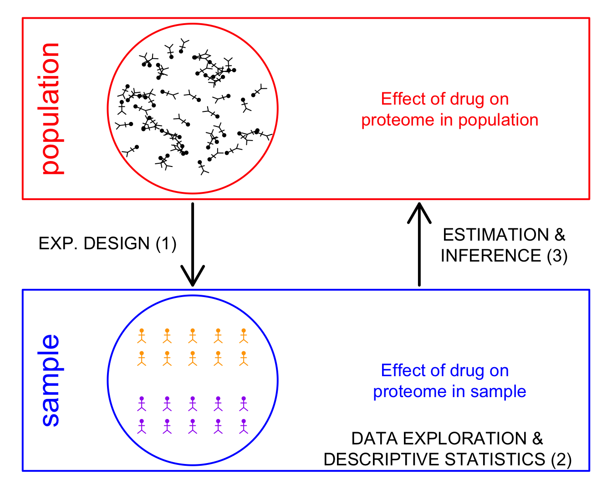
Experimental Design
Lieven Clement ![]()

1 Motivating example (Brunner et al. 2022)

Brunner et al. 2022. Mol Syst Biol. 18(3): e10798. doi: 10.15252/msb.202110798
Single cell study on 231 HeLa cells with drug induced cell cycle arrest for which over 2500 proteins where measured with MS-SCP.
Authors report:
“The proteomes of the different cell cycle states grouped together in a principal component analysis (PCA) plot”.
“Our single‐cell data set also highlighted proteins not previously associated with the cell cycle and the G2/M transition”
1.1 Reanalysis of the results
We can reproduce the results (Vanderaa and Gatto 2022):

Another way to look at the same plot

What happened
Confounding between acquisition batch and cell cycle arrest!!
To consult the statistician after an experiment is finished is often merely to ask him to conduct a post mortem examination. He can perhaps say what the experiment died of. – Ronald Fisher
Thinking about design before your experiment is key!!!!
- Statistics is the science on
- collecting (experimental design),
- exploring (data exploration) and
- learning from data and to generalize what we observe in the sample towards the population while quantifying, controlling and reporting variability and uncertainty (statistical modelling and statistical inference).
2 Stages of an experiment
2.1 Stages
Define hypothesis
Experimental design
- Population
- Technology
- Lab protocol
- Think about sources of variation
- Choice of Design
- Experimental conditions
- Replicates
- How will we analyse the data
- How can we translate our research question in a quantity that we can measure
- Power analysis
Conduct experiment
Data Analysis
- QC
- Preprocessing & Data exploration
- Statistical inference
Optimisation of your experiment (go back to 2)
Validation
Report your results
Always good to discuss with statistician before the experiment!
3 Sources of variability
3.1 Experimental unit
- Animal, subject, plant, culture, cage to which the treatment is randomized
- Colony (B)
- Strain (B)
- Culture (B)
- Treatment / Condition of interest (B)
- Cage (T)
- Sex (B)
- Individual (B)
- Life style (B)
- …
3.2 Sample prep
- Organs from sacrificed animal (B)
- Single cells (B)
- Runs for Dissociation, Extraction and Digestion (T)
- Multipipet / pipeting robot (T)
- Plate (T)
- Position on plate (T)
3.3 Proteomics acquisition
- LC column (T)
- Run (T)
- Technical repeat (T)
- Labeling (T)
- Acquisition order
- …
3.4 Observational unit
- Unit on which the measurement is conducted
- Cell
- Cell bulk
- Animal
- If observational unit \(\neq\) experimental unit: pseudoreplication
3.5 Avoid confounding
- Random sampling & Randomisation
- Blocking
4 Random Sampling & Randomisation
4.1 Random Sampling
Random sampling is closely related to the concept of the population or the scope of the study.
Based on a sample of subjects, the researchers want to come to conclusions that hold for
- all kinds of people
- only male students
Scope of the study should be well specified before the start of the study.
Representative sample: For the statistical analysis to be valid, it is required that the subjects are selected completely at random from the population to which we want to generalize our conclusions.
Selecting completely at random from a population implies:
- all subjects in the population should have the same probability of being selected in the sample,
- the selection of a subject in the sample should be independent from the selection of the other subjects in the sample.
4.2 Randomisation
- Make sure that groups are comparable / Avoid systematic differences between groups
- Randomisation: treatments of interest are attributed at randam to the experimental units
4.3 Consequences of Random sampling & Randomisation
The sample is thus supposed to be representative for the population, but still it is random.
What does this imply?
4.3.1 National Health NHanes study
- Since 1960 individuals of all ages are interviewed in their homes every year
- The health examination component of the survey is conducted in a mobile examination centre (MEC).
- We will use this large study to select random subjects from the American population.
- This will help us to understand how the results of an analysis and the conclusions vary from sample to sample.
nhanesSub <- NHANES %>%
filter(Age >= 18 & !is.na(Height)) %>%
select(c("Gender","Height"))
nhanesSub %>%
ggplot(aes(x = Height)) +
geom_histogram() +
facet_grid(Gender ~ .) +
xlab("Height (cm)")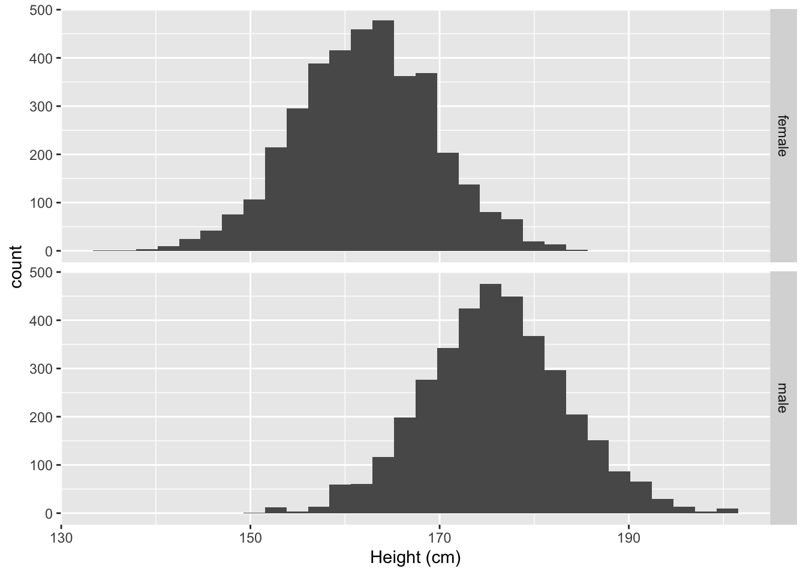
| Gender | mean | sd |
|---|---|---|
| female | 162.1 | 7.3 |
| male | 175.9 | 7.5 |
- Data bell-shaped
- Allows us to summarize data with two statistics: mean and standard deviation
Unfortunately we cannot sample entire population! We have to draw conclusions based on a small sample.
4.3.2 Experiment
- We can simulate an experiment on the American population by sampling from the NHANES study
- 5 males and 5 females above 18 years.
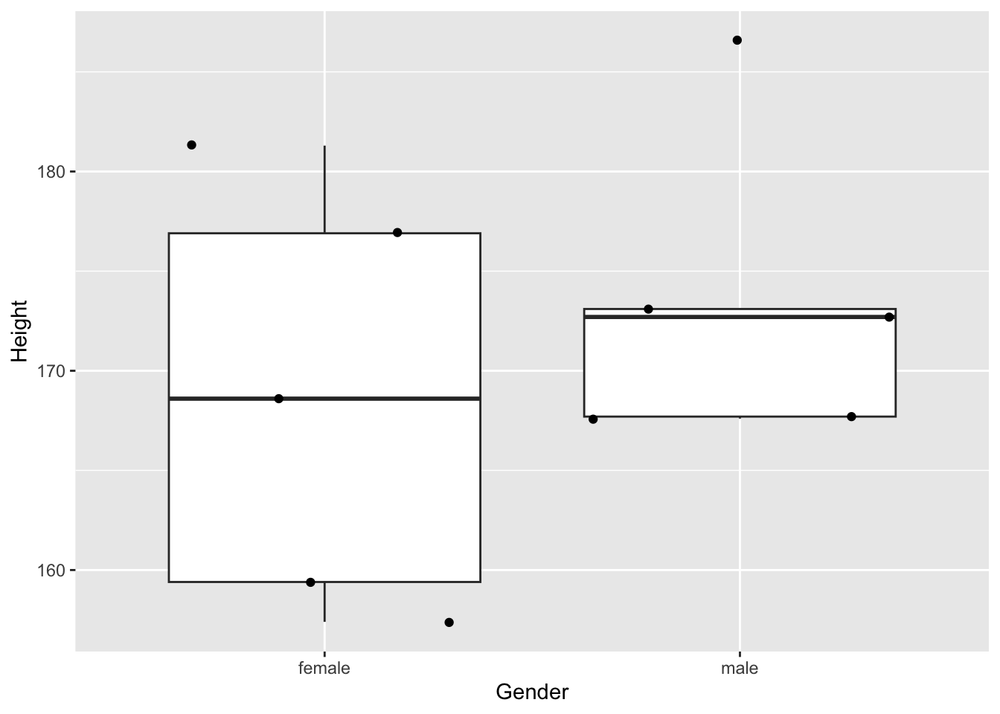
# A tibble: 2 × 5
Gender mean sd n se
<fct> <dbl> <dbl> <int> <dbl>
1 female 169. 10.5 5 4.69
2 male 174. 7.76 5 3.47Note that the sample mean is different from that of the large experiment (“population”) we sampled from.
We test for the difference between Males and females
t.test(Height ~ Gender, samp, var.equal = TRUE)
Two Sample t-test
data: Height by Gender
t = -0.82599, df = 8, p-value = 0.4327
alternative hypothesis: true difference in means between group female and group male is not equal to 0
95 percent confidence interval:
-18.276478 8.636478
sample estimates:
mean in group female mean in group male
168.72 173.54 4.3.3 Repeat experiment
If we do the experiment again we select other people and we obtain different results.
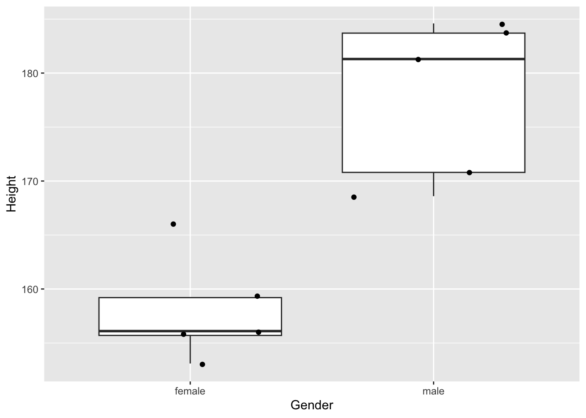
# A tibble: 2 × 5
Gender mean sd n se
<fct> <dbl> <dbl> <int> <dbl>
1 female 158. 5.00 5 2.24
2 male 178. 7.53 5 3.37
Two Sample t-test
data: Height by Gender
t = -4.8876, df = 8, p-value = 0.001213
alternative hypothesis: true difference in means between group female and group male is not equal to 0
95 percent confidence interval:
-29.08282 -10.43718
sample estimates:
mean in group female mean in group male
158.04 177.80 4.3.4 And again
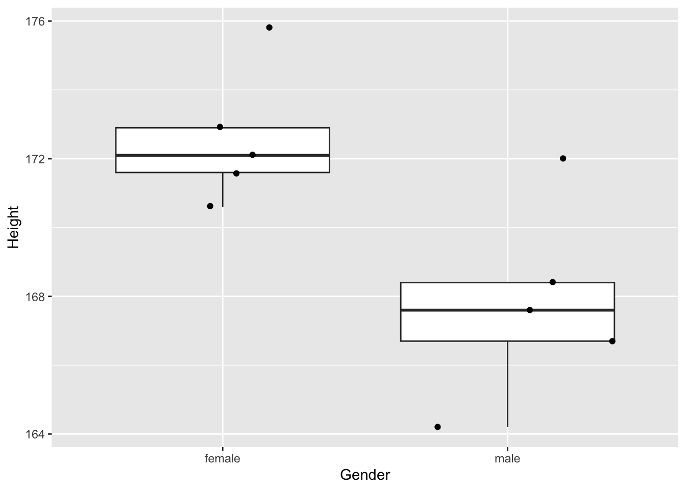
# A tibble: 2 × 5
Gender mean sd n se
<fct> <dbl> <dbl> <int> <dbl>
1 female 173. 1.97 5 0.883
2 male 168. 2.84 5 1.27
Two Sample t-test
data: Height by Gender
t = 3.1182, df = 8, p-value = 0.01427
alternative hypothesis: true difference in means between group female and group male is not equal to 0
95 percent confidence interval:
1.255452 8.384548
sample estimates:
mean in group female mean in group male
172.60 167.78 4.4 Summary
We drew at random different subjects in each sample
As a result, length measurements vary from sample to sample.
So do the estimated means and standard deviations.
Consequently, our conclusions are also uncertain and may change from sample to sample.
For the length example, samples where the effect is opposite to that in the population and where we decide that the difference is significant are rare.
\(\rightarrow\) With statistics, we control for the probability of drawing wrong conclusions.
5 Control of Decision Errors
We have two types of errors:
- false negatives: there is an effect but we do not pick it up
- false positives: there is no effect but we report a difference between both groups
5.1 Control of false negatives
- We repeat the experiment with 5 females and 5 males 10000 times.
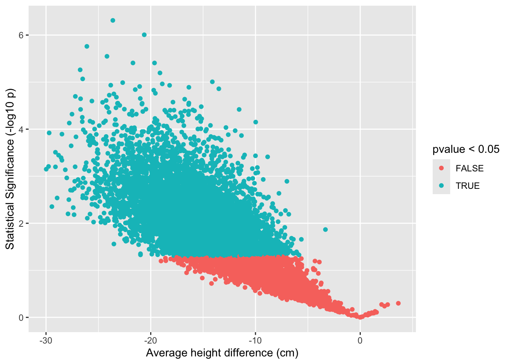
<ggplot2::labels> List of 1
$ x: chr ""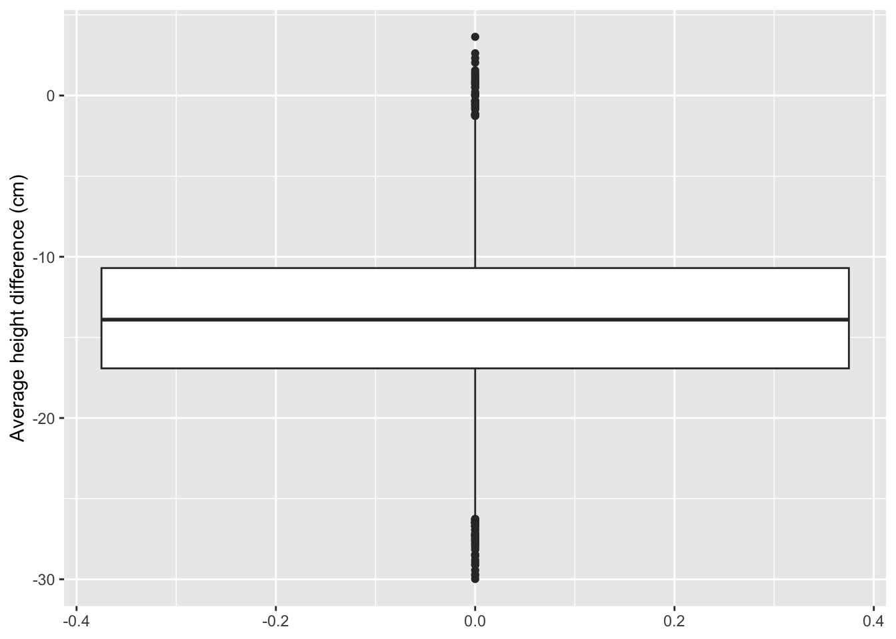
There are 7234 samples for which we return a true positive \(\rightarrow\) The power is 72.3%.
There are 2766 samples for which we cannot report a significant difference.
There are 0 for which we report a significant height difference between females and males that is positive.
The sample that we have shown where we concluded that females were larger than males was very unlikely. We had to draw 88605 samples before we were able to find such an extreme sample.
Why do we have a considerable number of samples for which we do not find a significant height difference between males and females?
5.1.1 Larger sample size
When we take 20 subjects in each group:
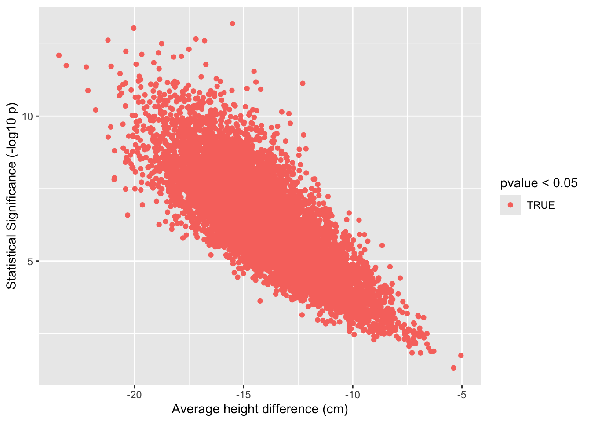
<ggplot2::labels> List of 1
$ x: chr ""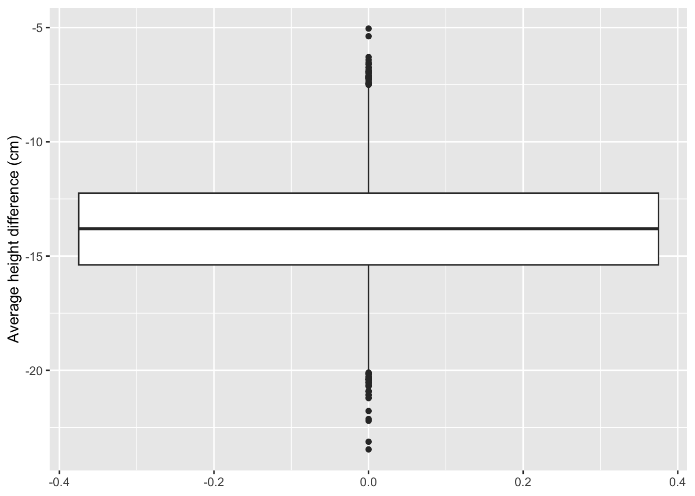
Larger sample size:
- Larger power to pick up a real difference in the population.
- Mean is more precise
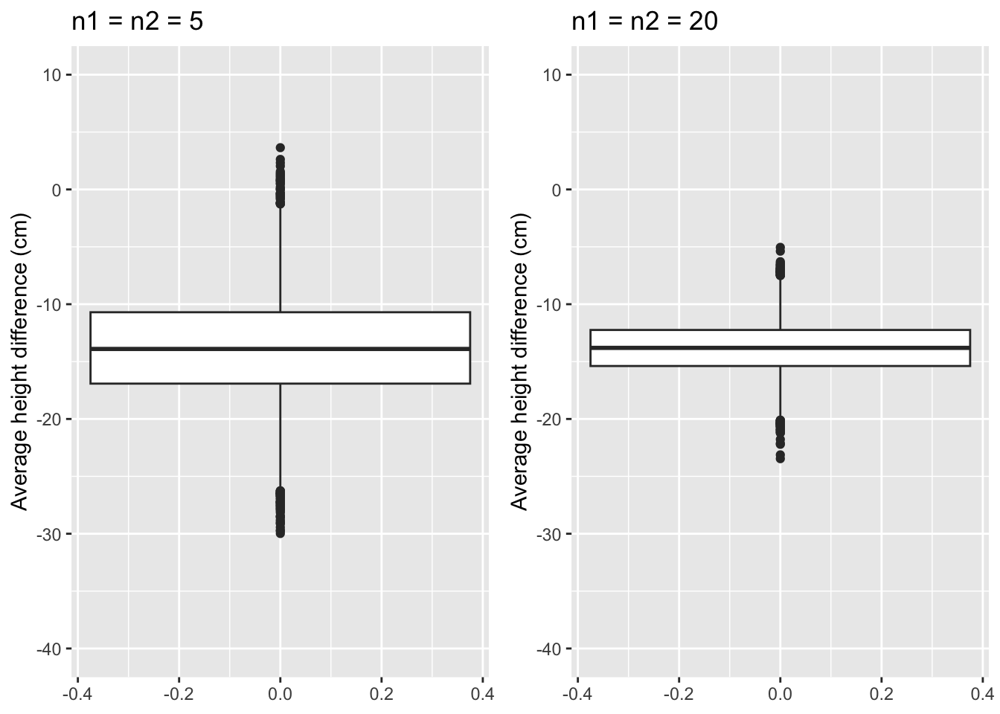
5.2 Control of false positives
Suppose that we set up an experiment with two groups that are both sampled from the females in the NHANES study
Both groups come from the same population: so no difference
We again draw repeated experiments with 5 subjects in each group.
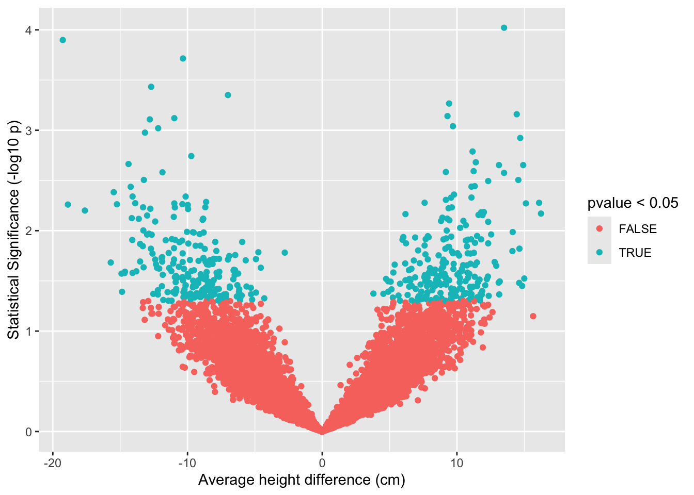
<ggplot2::labels> List of 1
$ x: chr ""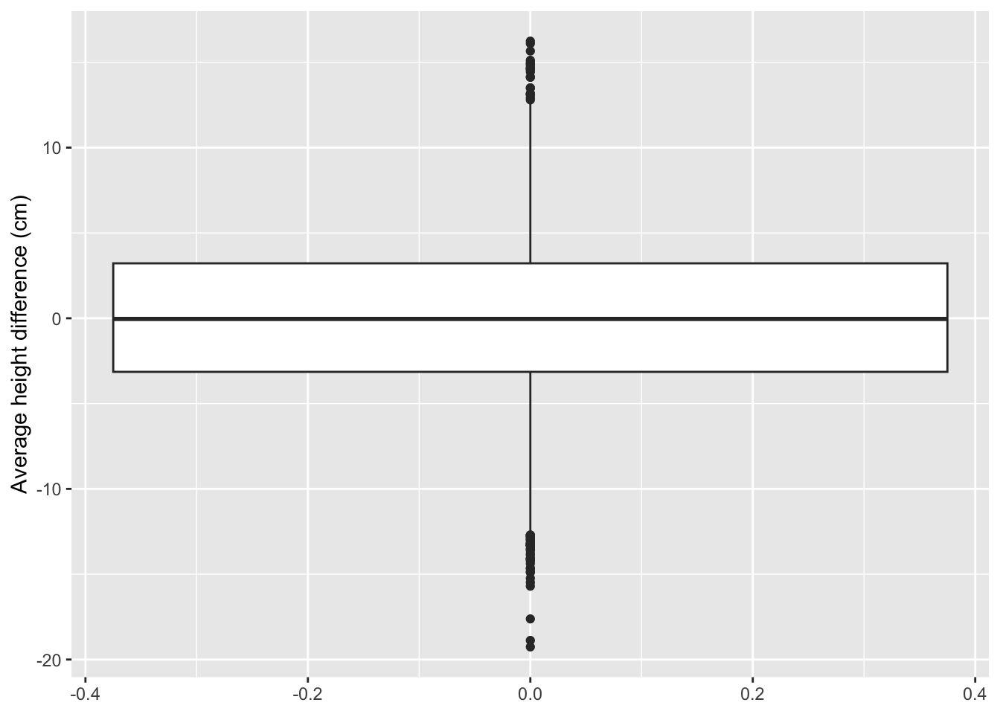
Only in 451 out of 10000 samples we conclude that the mean in both groups are different or in 4.5% of the samples.
With the statistical analysis we can control the number of false positive results correctly at the 5% significance level.
5.2.1 Larger sample size
We perform the simulations again with 20 subjects in each group.
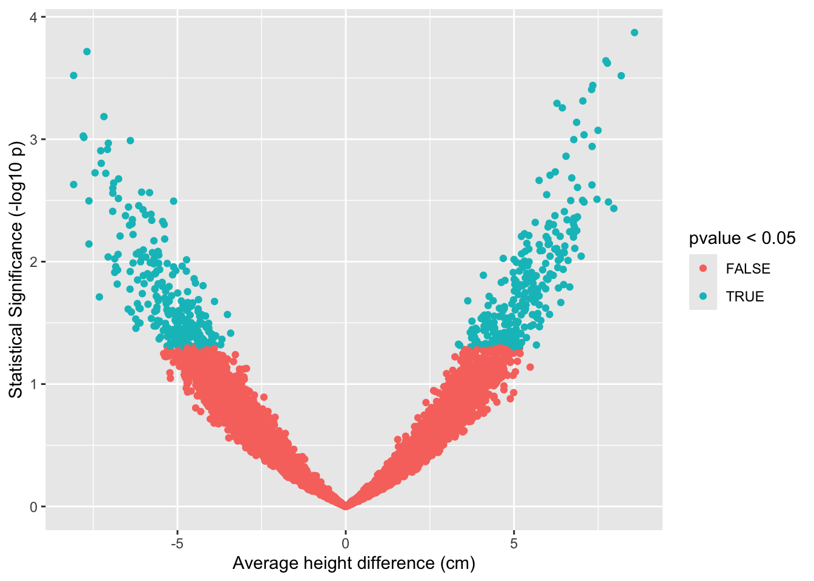
<ggplot2::labels> List of 1
$ x: chr ""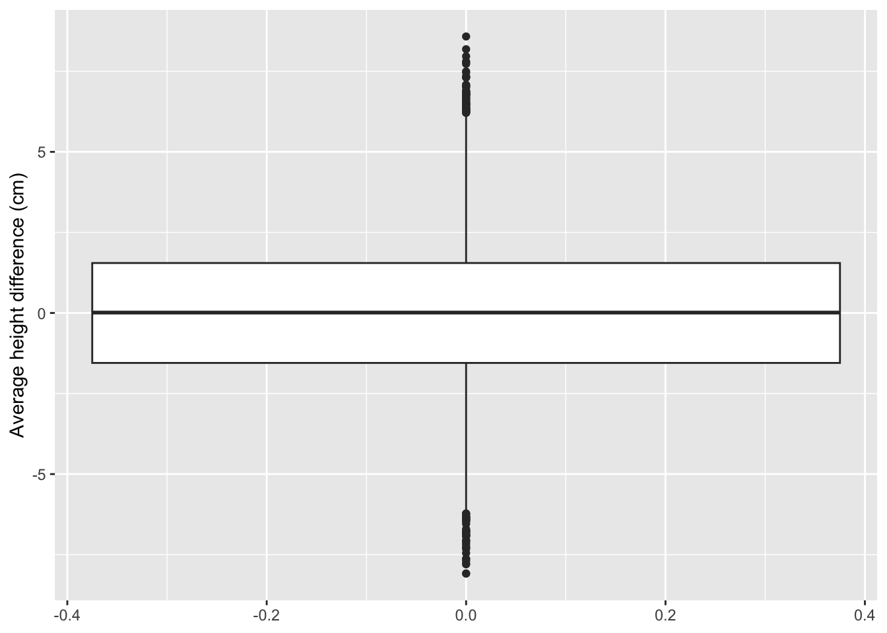
Only in 517 out of 10000 samples we conclude that the mean in both groups are different or in 5.2% of the samples.
So with the statistical analysis, also when taking a large sample, we correctly control the number of false positive results at 5%.
The mean difference is again more accurately estimated (fluctuating less around the real difference of 0).
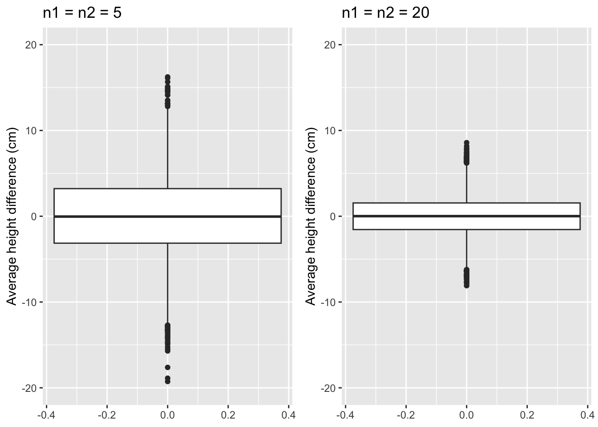
6 Control treatment
Captopril study: SBP before and after dosign captopril.
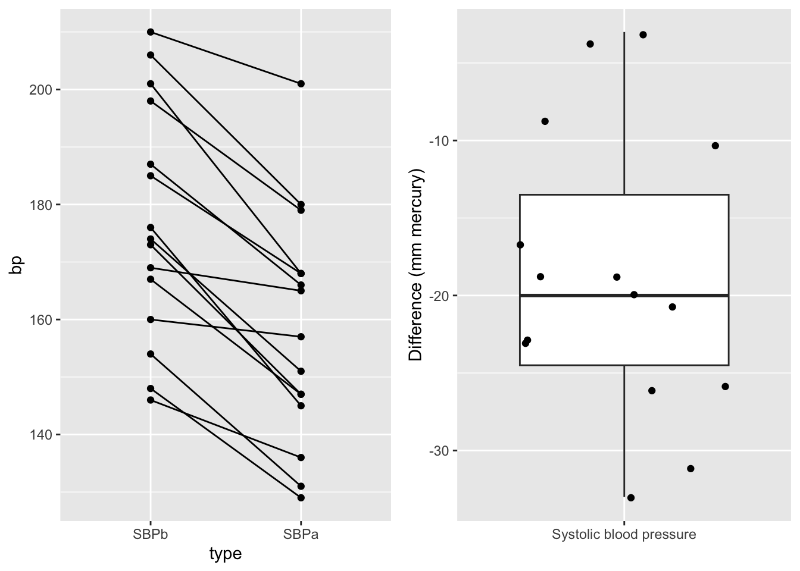
Paired t-test
data: SBPa and SBPb
t = -8.1228, df = 14, p-value = 1.146e-06
alternative hypothesis: true mean difference is not equal to 0
95 percent confidence interval:
-23.93258 -13.93409
sample estimates:
mean difference
-18.93333 sd(captopril$SBPb)[1] 20.56511sd(captopril$SBPa)[1] 20.00357sd(captopril$deltaSBP)[1] 9.027471pre-test/post-test experiment
- Advantage?
- Problem?

Good control is nessecary
\(\rightarrow\) Placebo controlled double blind experiments
\(\rightarrow\) Injection of control animal with blank containing same solvents, etc.
7 Replication
Within an experiment: Enables to estimate uncertainty / biological variability
Replication is essential for quantifying the noise
Noise: biological and technical in nature
Between experiments: Any true finding should be reproducible
7.1 At which level do we have to replicate?
- Genuine replicates include all sources of variability: technical + biological
- Technical replicates are important if you assess new technologies
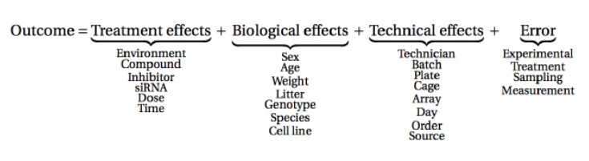
7.2 Pseudoreplication
Samples are not independent e.g.
- Same batch of reagents
- Same 96-well plate
- Leaves from the same plant
- Cells from the same plate
- Mice in the same cage or from the same litter
- Spatially/chronally clustered together (wells on plate, all trt A measured before trt B)
Try to avoid pseudo-replication: samples are not independent
- Contain less info than genuine replicates
- If analysed as if they were independent \(\rightarrow\) increased number of false positives
- If not possible e.g. in a multi-subject single cell context, pseudo-replication typically occurs and has to be accounted in the analysis!
- Consult statistician
7.3 Francisella tularensis study Ramond et al. (2015)
- Proteome of wild type F. tularensis (WT) vs ArgP-gene deleted F. tularensis (knock-out, D8).
- Each bio-rep in technical triplicate on MS
- Illustration with 50S ribosomal proteïn L5 A0Q4J5
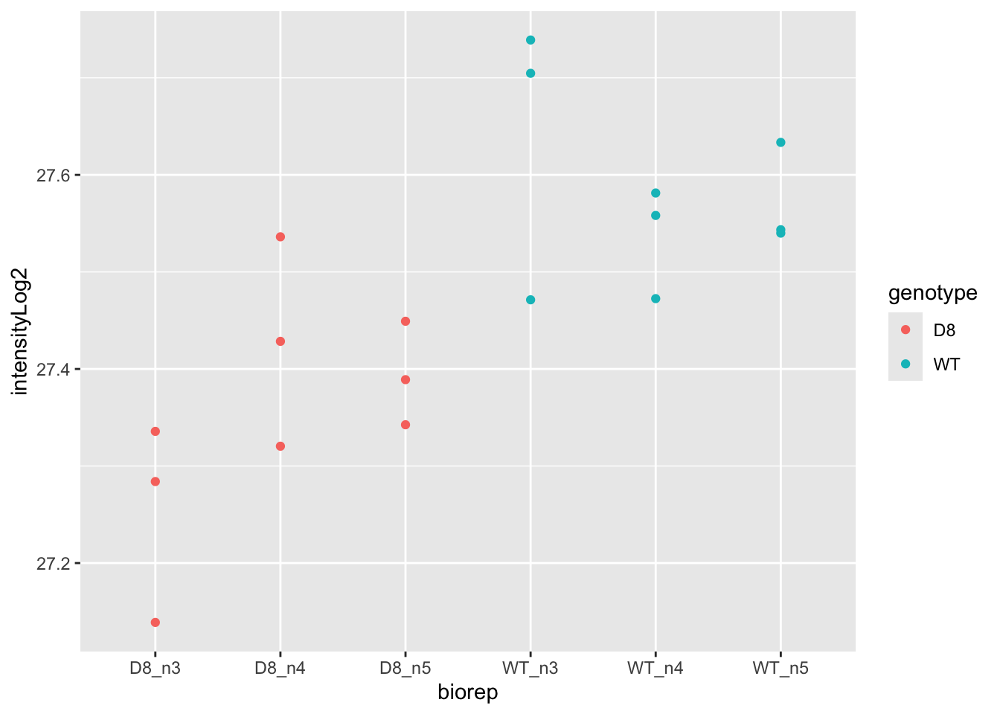
If we analyse original data with a t-test we act as if we would have 9 genuine repeats in each condition
Effect of interest between bio-reps so no block design
Same number of technical repeats for each genuine repeat we can first average over the techreps.
If that is not the case more complex data analysis methods have to be used, e.g. mixed models!
Caution: never average over genuine repeats/experimental units!!!
7.3.1 Correct analysis
lmBiorep <- lm(intensityLog2 ~ -1 + biorep, franc)
francSum <- data.frame(genotype = rep(c("D8","WT"),each=3) %>% as.factor %>% relevel("WT"), intensityLog2 = lmBiorep$coef)
francSum genotype intensityLog2
biorepD8_n3 D8 27.25286
biorepD8_n4 D8 27.42836
biorepD8_n5 D8 27.39357
biorepWT_n3 WT 27.63831
biorepWT_n4 WT 27.53734
biorepWT_n5 WT 27.57232t.test(intensityLog2 ~ genotype, francSum, var.equal=TRUE)
Two Sample t-test
data: intensityLog2 by genotype
t = 3.662, df = 4, p-value = 0.02154
alternative hypothesis: true difference in means between group WT and group D8 is not equal to 0
95 percent confidence interval:
0.05426166 0.39452610
sample estimates:
mean in group WT mean in group D8
27.58266 27.35826 7.3.2 Wrong analysis
Two Sample t-test
data: intensityLog2 by genotype
t = -4.5904, df = 16, p-value = 0.0003017
alternative hypothesis: true difference in means between group D8 and group WT is not equal to 0
95 percent confidence interval:
-0.3280223 -0.1207654
sample estimates:
mean in group D8 mean in group WT
27.35826 27.58266 - Result much more significant because we erroneously act as if we have a 9 by 9 comparison.
7.3.3 Simulation under \(H_0\)
- We use data to estimate variance components: technical and biological variance.
- We simulate 10000 experiments with similar design from a normal distribution under the assumption that group means are the same.
- We analyse them with both designs
Probability on a false positive when using a 5% significance level in
- correct analysis:
mean(resCorrect$pvalue < 0.05)[1] 0.0452- wrong analysis:
mean(resWrong$pvalue < 0.05)[1] 0.156- We no-longer control the false positives at the \(\alpha = 5\)% level!
- We report to much false positives!
7.4 How many genuine replicates?
- For experimental studies: look at randomisation of treatment
- Double blind study with 20 sputum positive patients randomized to treatment or placebo
- Mouse study (10 mice)
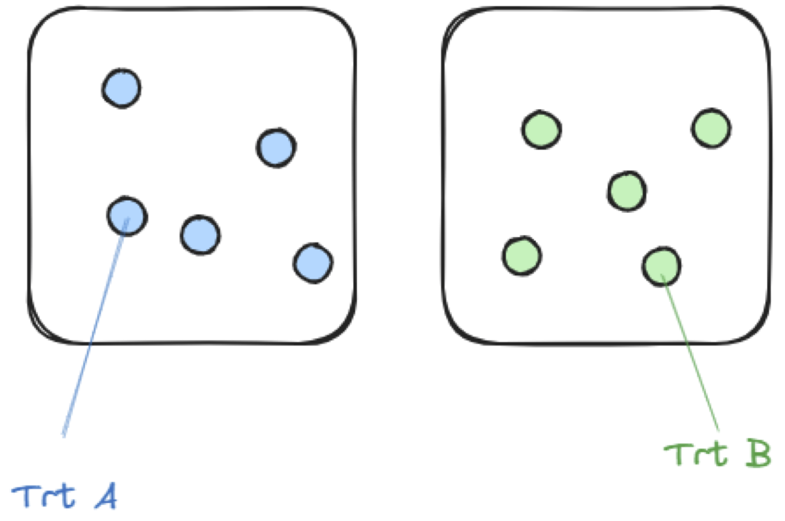
- Mouse study (30 mice)
- Mouse study (10 mice)
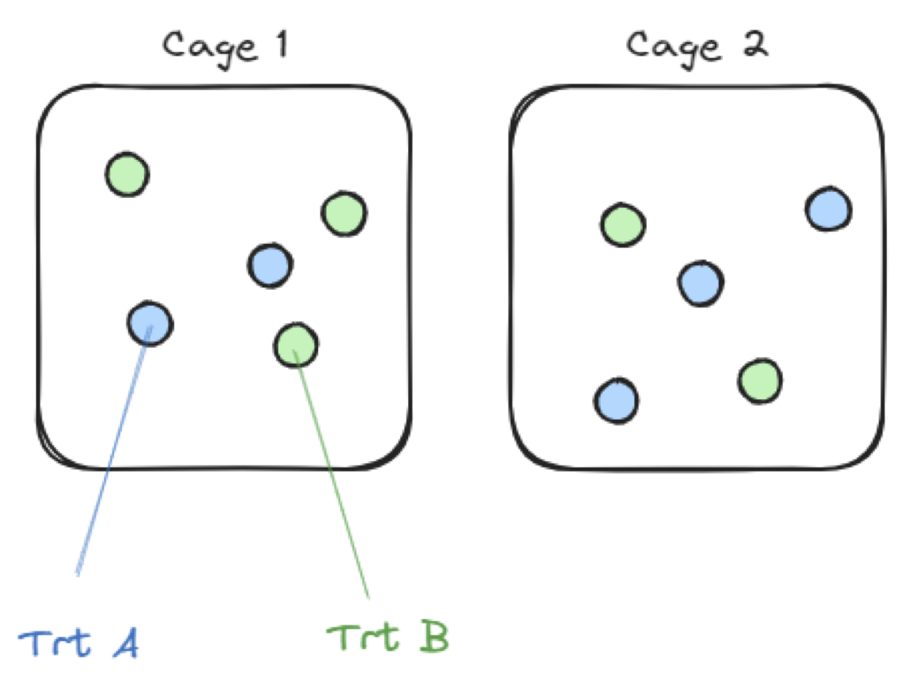
8 Blocking
- Isolate known sources of variability from the experiment
- One of the most powerful concepts of experimental design
- Nature methods: Points of significance - Blocking
https://www.nature.com/articles/nmeth.3005.pdf
8.1 Example

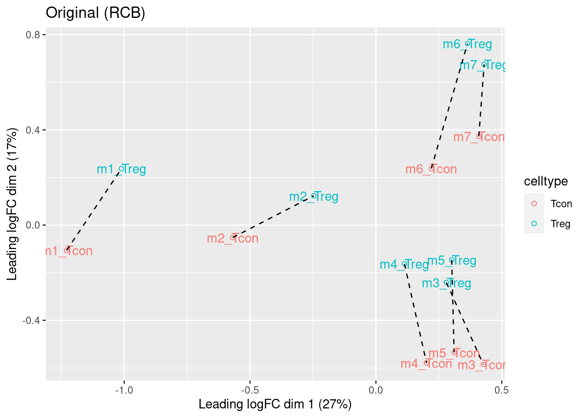
9 Implications of different technologies
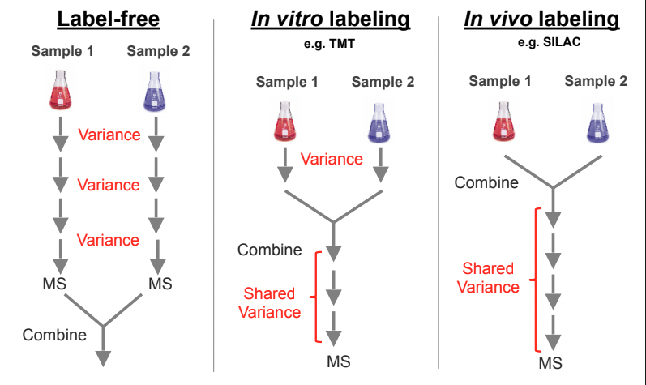
Slide courtesy (Lisa Breckels)10 Power analysis
- How many replicates do we need?
- Differs for different experimental designs
- Requires knowledge of total variability / magnitude of sources of variability
- Use literature or pilot experiment
- Can be done using simulations
10.1 Mouse example
In 2021 Choa et al. published that the cytokine Thymic stromal lymphopoietin (TSLP) induced fat loss through sebum secretion (talg). [html] [PDF]
Suppose that you would like to set up a similar study to test if cytokine interleukin 25 (IL) also has beneficial effect.
You plan to setup a study with a control group of high fat diet (HFD) fed mice and a treatment group that recieves the HFD and IL.
What sample size do you need to pick up the effect of the treatment.
10.2 How will we analyse the data of this experiment?
- Two groups: two sample t-test
\(H_0\): The average weight difference is equal to zero
\(H_1\): The average weight difference is different from zero
Power? Is design specific. For two-group comparison it depends on
- Real weight difference between the group means.
- Variability of the weight measurements
- Significance level \(\alpha\)
- Sample size in both groups
We can estimate the power if
- The assumptions of the model are met: weights are normally distributed with same variance
and we know
- Standard deviation of the weight measurements around their average mean for HFD-fed mice
- Real effect size in the population
- Sample sizes in each group
10.3 Use data from a previous experiment to get insight in mice data
- Suppose that we have access to the data of a preliminary experiment (e.g. provided by Karen Svenson via Gary Churchill and Dan Gatti and partially funded by P50 GM070683 on PH525x)
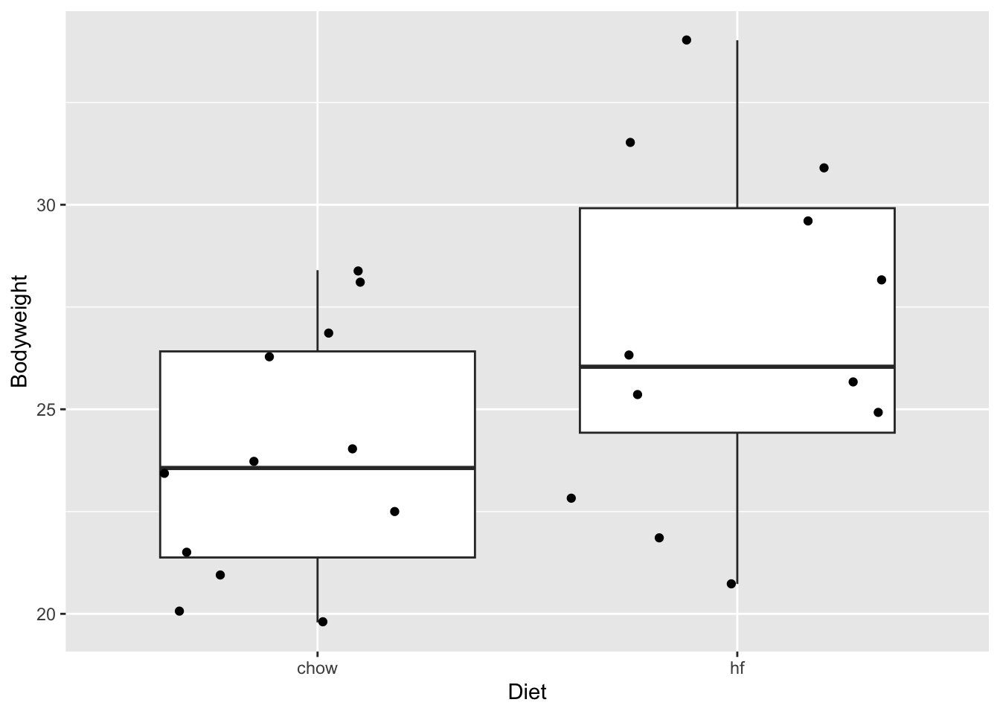
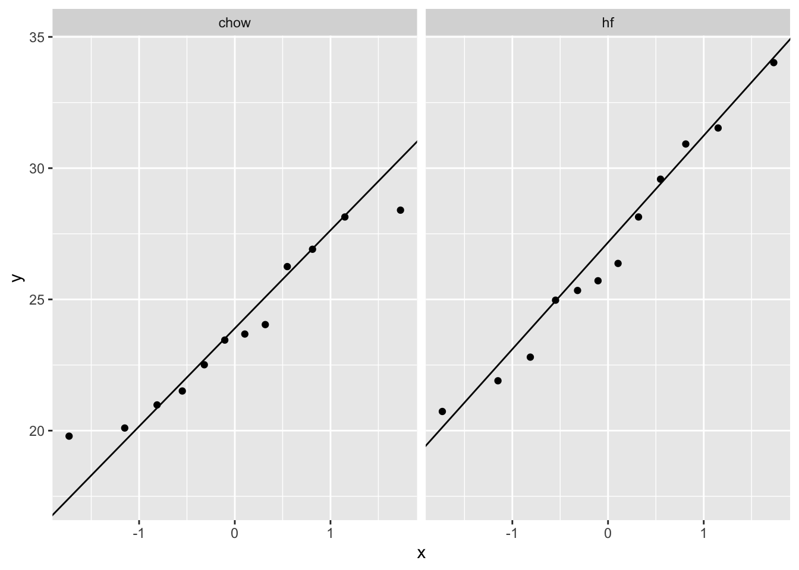
# A tibble: 2 × 5
Diet mean sd n se
<fct> <dbl> <dbl> <int> <dbl>
1 chow 23.8 3.02 12 0.873
2 hf 26.8 4.10 12 1.18 In the experiment we have data from two diets:
- Regular diet of cerial and grain based diet (Chow)
- High Fat (hf)
We can use the hf mice as input for our power analysis.
- The data of hf mice seem to be normally distributed
- The mean weight is 26.8g
- The SD of the weight is 4.1g
10.3.1 Effect size?
The alternative hypothesis is complex.
It includes all possible effects!
In order to do the power analysis we will have to choose a minimum effect size that we would like to detect.
Suppose that we would like to pick up a weight change of at least 10%.
delta <- abs(round(miceSum$mean[2] * .1, 1))
delta[1] 2.710.3.2 Simulation based power analysis
We can use simulations to assess the power.
- E.g. for a 3 by 3 comparison where there is a weight difference of 3g.
- We simulate 3 observations from a normal with mean 26.8g and sd 4.1g and 3 observations from a normal with mean 29.8g and sd 4.1g.
- We perform a t-test and assess if we can conclude that there is a significant difference in the average weight between both groups based on this sample
- We repeat it many times and calculate the probability to find a significant difference.
We can repeat the same procedure for many different sample sizes…
n power
3 3 0.10800
8 5 0.17585
13 10 0.33935
18 20 0.61945
23 25 0.71630
28 50 0.95170
33 75 0.99410
38 100 0.99935We can also repeat that for different effect sizes
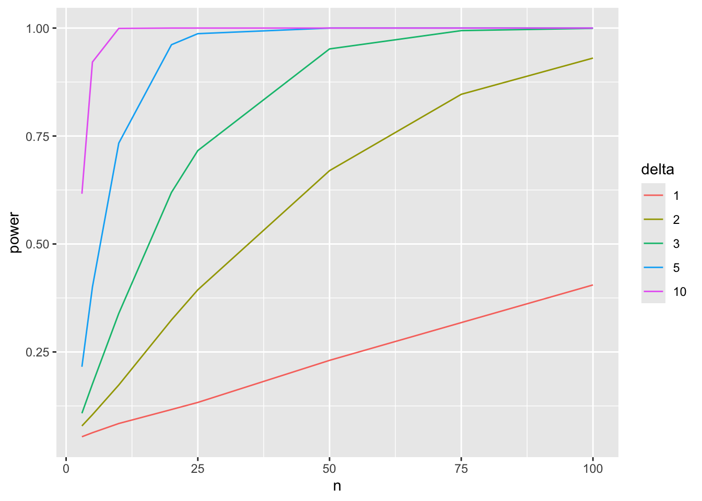